NCOR-affiliated ontologists are involved in collaborative ventures with many leading national and international institutions. Many of these ontologists are centered at the University at Buffalo. They have received major funding for ontology-related projects from the NSF, NIH, US and Canadian defense agencies and defense industries, and from the European Union.
NCOR Scientists
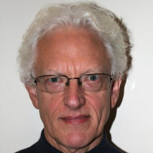Barry SmithPresident of NCOR
Department of Philosophy, University at Buffalo
Research in theoretical and applied ontology
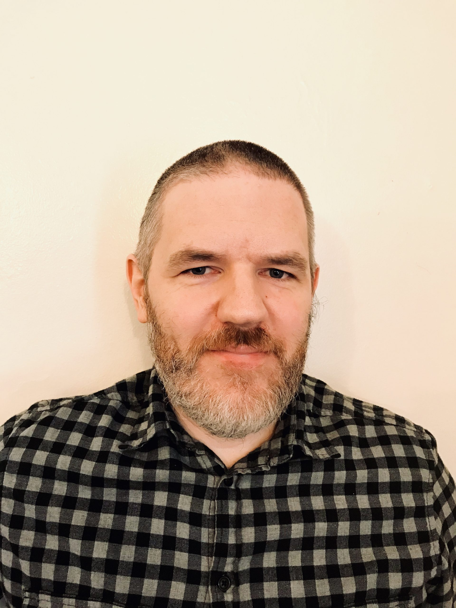Shane BabcockResearch in traditional metaphysics and applied ontology
Clinical Associate Professor, University of Florida College of Dentistry, Department of Community Dentistry & Behavioral Science
Research in Ontology, Dental Informatics, & Machine Learning

Rajiv Kishore
Professor and Chair, Department of Management, Entrepreneurship & Technology: University of Nevada, Las Vegas
Research in computational ontology with applications in business information systems and other areas.
David G. Limbaugh
Senior Ontologist, Department of Defense
Research Defense/Intelligence Ontology and Knowledge Modeling, Theoretical Ontology, Referent Tracking, Object-Based Production
Ron RudnickiPrincipal Ontologist, CUBRC, Inc.
Research in applied ontology, semantic web technologies, and related areas for military intelligence.
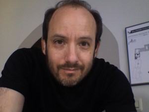
Allen RuttenbergOntologist, Open Biological and Biomedical Ontology Foundry
Research in pathway knowledge representation, computational biology, bioinformatics, artificial intelligence, rich user interface, parallel computing.
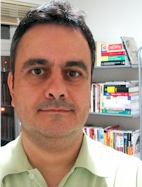
Mauricio B AlmeidaInformation Science School, Federal University of Minas Gerais, Founding Director, Brazilian Center for Ontological Research
Research in knowledge representation, applied ontologies, information security, biomedical and legal vocabularies.
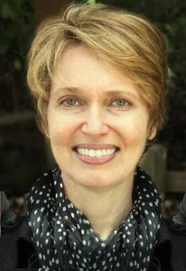
Linday CowellAssociate Professor, University of Texas Southwestern Medical Center: Department of Clinical Sciences
Research in Computational immunology and infectious disease ontology.

Janna HastingsAssistant Professor of Medical Knowledge and Decision Support; Institute for Implementation Science in Health Care, University of Zurich, and the School of Medicine, University of St. Gallen
Research in Medical knowledge, Decision support, Artificial intelligence, Applied ontology, Health
Jobst Landgrebe Founder and CEO of Cognotekt, GmBH
AI company based in Cologne specialised in the design and implementation of holistic AI solutions.
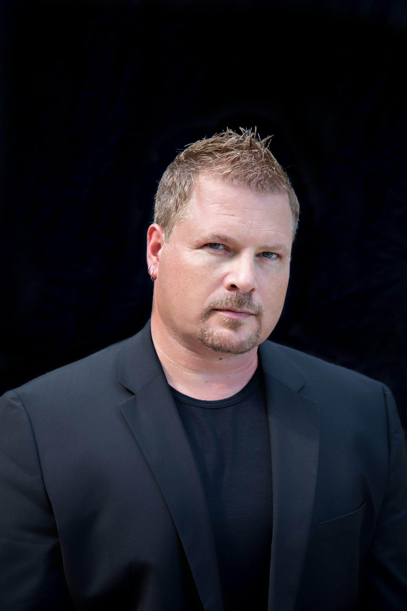
Eric LittleInnovation Principal Director, Life Sciences & Head of Product Strategy & Analytics - INTIENT at Accenture
Fabian NeuhausChair for Theoretical Computer Science, Formal methods and Semantics, Otto-von-Guericke, University of Magdeburg
Research in Ontologies and Ontology Languages
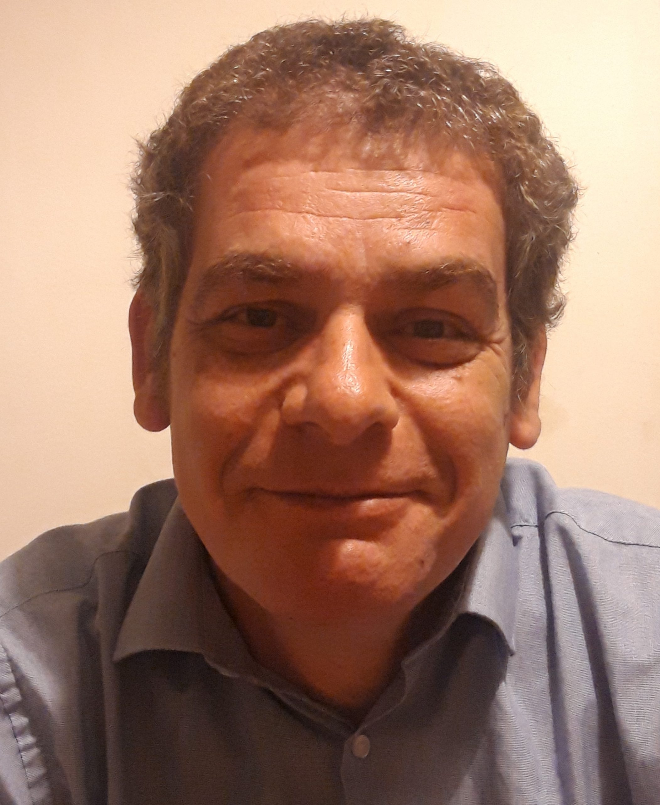
Pierre GrenonSenior Scientific Knowledge Engineer
Research in Ontology, high-level integration and domain-specific modelling, Machine-processable knowledge representation and reasoning , Semantic metadata, data and information management, Knowledge acquisition, business user requirements
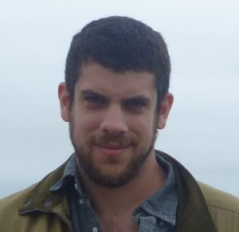
Jonathan SimonAssistant Professor of Philosophy at the University of Montréal
Research in AI explainability and transparency, ontology of socially complex domains.
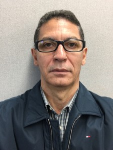
José M Parente de OliveiraProfessor, Aeronautics Institute of Technology; Computer Science Department
Research in Knowledge Representation, Ontology Engineering, Semantic Computing, Semantic Web, Linked Data/Big Data, Command and Control/Situation Awareness.

Carter-Beau Benson
Department of Philosophy, University at Buffalo
Bioethics, Pluralism, and Applied Ontology

Delaney McNulty
Department of Philosophy, University at Buffalo
Philosophy of Science, Philosophy of Mind, Cognitive Science, Philosophy of Psychology, and Applied Ontology
PhD Candidate in the Department of Philosophy, University at Buffalo
Research in Social Metaphysics, Philosophy of AI, and Applied Ontology

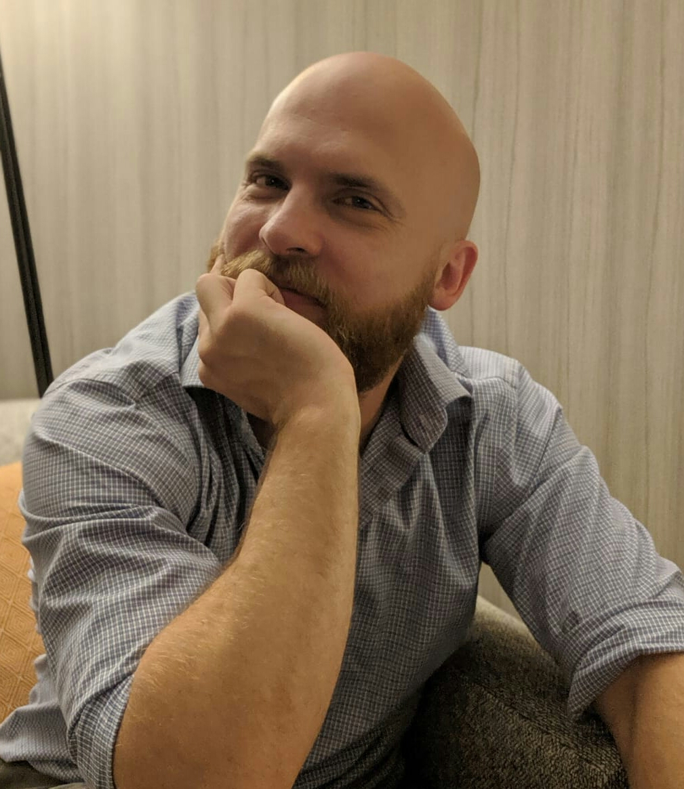John Beverley
Vice President of NCORAssistant Professor, Department of Philosophy; University at Buffalo
Research in Formal Ontology, Logic, Philosophy of Medicine, Bioethics
Associate Professor of Biomedical Informatics; School of Medicine and Biomedical Sciences, University at Buffalo
Research in Gene Ontology, Cell Ontology, immunology ontologies, ontologies of neurology and neurological diseases.
Professor and Chair of Department of Biomedical Informatics; University at Buffalo
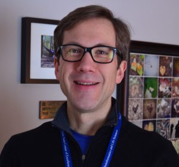Mark Jensen
Ontologist at CUBRC Inc
Research in Development and implementation of ontologies for military and biomedical applications; mental health, psychiatry, and neurology.
Dean's Distinguished Professor at Clemson University, Founder and CEO AIBrilliance
Professor & Chair of the Department of Philosophy; University at Buffalo
Research in traditional metaphysics, powers and the ontology of disease and dysfunction.
Assistant Professor in the Department of Biomedical Informatics; University of Arkansas for Medical Sciences
Research in ontologies, semantic web, knowledge representation and reasoning, biomedical informatics.
Principal Ontologist, Capital One.
Research Interests: Social and deontic ontology, finance, methodology, and semantic technology
Yongqun ("Oliver") HeAssociate Professor, University of Michigan, Ann Arbor
Research in ontology, microbiology, vaccinology, nephrology, literature mining, machine learning
Assistant Professor of Philosophy and Forensic Epistemology; University of Toronto Mississauga
Research in formal and Applied Ontology; Philosophy of Science; Forensic Epistemology; Forensic Psychology.
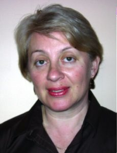Tatiana Malyuta
Associate Professor in Computer Systems and Technology Department at the New York City College of Technology
Mitsu Okada
Professor Emeritus at Keio University's Department of Philosophy
Research in Logic (proof theory), theoretical computer science, and theoretical linguistics
Research in scientific database integration, ontology development, software development, philosophy of science
Lowell VizenorDirector of Product Innovations at NIRA, INC.
Christian Will
Research Scientist, National Center for Ontological Research

Austin Liebers
PhD Candidate in the Department of Philosophy, University at Buffalo
Research in Metaphysics, Metaethics, Aesthetics, and Applied Ontology


 Cameron More
Cameron More
Department of Philosophy, University at Buffalo
INP-ENIT, Federal University of Toulouse, France
Research in ontology - based engineering, modular ontologies, semantic interoperability


Chief, Division of Biomedical Ontology
Professor, Department of Biomedical Informatics
Research Director, Institute for Healthcare InformaticsDirector, Ontology Research Group
Associate Professor in the Departments of Philosophy and Geography, University at Buffalo
Research in formal and applied ontology, ontology of space, time and spatial entities, spatio-temporal reasoning, bio-medical ontology.
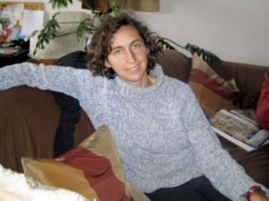Maureen Donnelly
Associate Professor in the Department of Philosophy, University at Buffalo
Research in logic, formal foundations of ontology, mereology, biomedical ontology.
Professor in the Department of Philosophy, University at Buffalo
Co-director of Romanell Center for Clinical Ethics and the Philosophy of Medicine
Research in ontological and ethical aspects of medicine, covering topics such as abortion, death, cloning, personal identity, and the definitions of health and sickness.
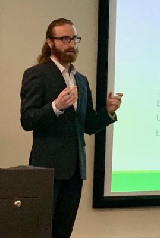
Eric Merrell
Johns Hopkins Applied Physics LabResearch interests: applied ontology, information representation, artificial intelligence
Professor in the Department of Management Science and Systems, University at Buffalo
Research in computational ontology with applications in business information systems and other areas.
 Ryan Riccucci Division Chief of U.S. Customs and Border Protection
Ryan Riccucci Division Chief of U.S. Customs and Border Protection
Research in applied Ontology, Human/Machine Teaming, Mission Engineering, and Data-Centric Object-Based Production
 Alexander P. Cox
Alexander P. Cox
Senior Ontologist, CUBRC, Inc.
Research in applied ontology and semantic web technologies for military intelligence and biomedical informatics, especially outer space and neurology.
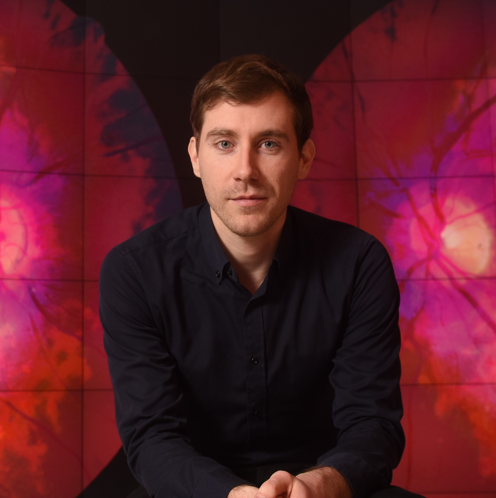Tim Prudhomme
Software developer and consultant focusing on applying methods from formal semantics, the semantic web, and logic to the development of software, especially for healthcare and biomedical informatics.
Research in knowledge representation, biomedical vocabularies and ontologies, and semantic web technologies in biology and medicine
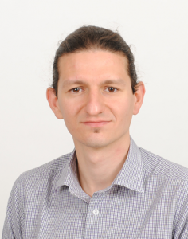Francesco Furini
Partner and Project Manager at Ultrasonic Technology
Research in ontology and engineering design
Senior Ontologist, The Johns Hopkins University Applied Physics Lab
Bill Hogan
Professor & Director of Biomedical Informatics, University of Florida
Research in Biomedical ontology and Referent Tracking systems
Senior Data Scientist Consultant
Research in ontology development, applied ontology for medical device surveillance, patient safety, and precision medicine
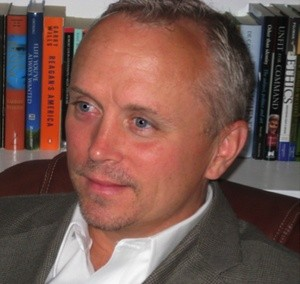 William Mandrick
Associate Director & Ontology Lead at the United Technologies Research Center
Research in Military ontology, conflict processes, counterinsurgency operations, and command and control.
Senior Ontologist at the Johns Hopkins University Applied Physics Lab
Research in evidence ontologies for the social sciences, experimental methods, ethics, moral psychology, and experimental philosophy
Lecturer in Business Information Systems, University College Cork
Research in Terminology, logic of definitions, Basic Formal Ontology (BFO).
Research in data management, data governance, and ontologies.